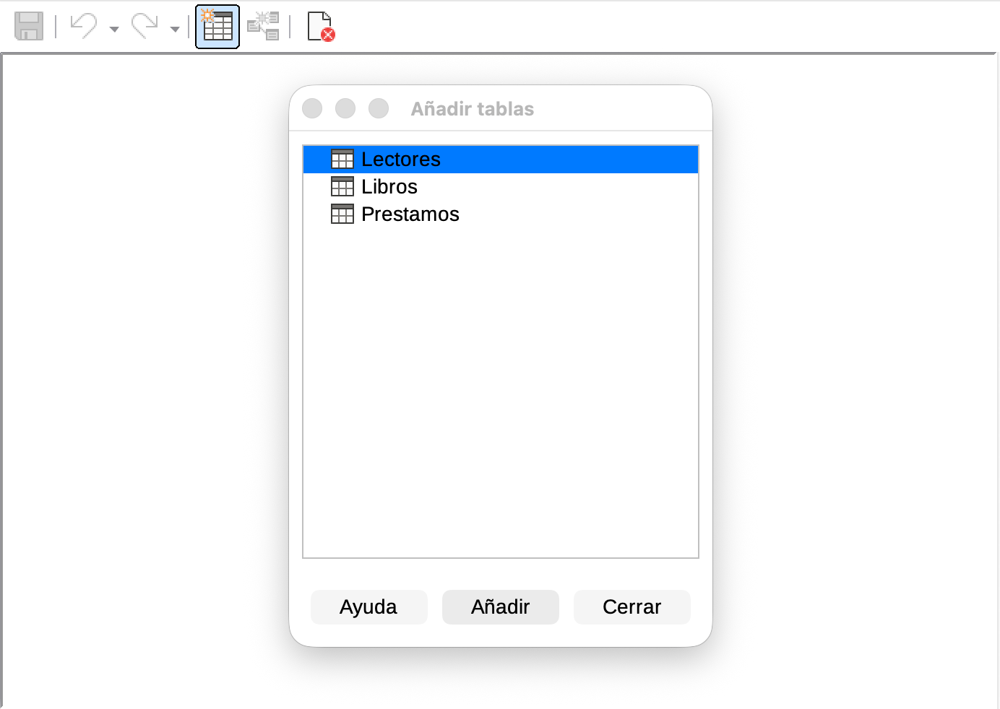

Contenido
Lo que vas a hacer hoy
- Entender qué es una clave foránea y por qué se llaman bases de datos relacionales.
- Crear las otras 2 tablas del proyecto, todavía vacías.
- Definir 2 relaciones 1:N entre las 3 tablas con integridad referencial.
- Cargar los datos en el orden correcto para que la base de datos no proteste.
ImportanteAntes de empezar: descarga tu archivo de Moodle
Abre la tarea “TAREA - Bases de datos” y descarga el .odb que subiste al final de S1. Trabaja sobre ese archivo descargado, no crees uno nuevo. Si no lo descargas, perderás todo lo de S1.
El procedimiento completo está en Cómo se guarda tu trabajo entre sesiones.
1. Por qué necesitamos relaciones
Mira la base de datos biblioteca del profesor (la que aparece en las capturas). Si solo tuvieras una tabla Libros, no habría forma decente de guardar quién toma prestado cada libro y cuándo, sin repetir información mil veces. La solución es separar en varias tablas y conectarlas: Libros, Lectores y Prestamos.
Un libro puede aparecer en muchos préstamos. Un lector puede tener muchos préstamos. Pero cada préstamo está asociado a un solo libro y a un solo lector. Eso es una relación 1:N.
TipTu tema sigue la misma estructura
Las imágenes y los ejemplos del cuerpo de esta sesión usan biblioteca porque es la base de datos que el profesor ha preparado para que veas el procedimiento completo. Tú trabajas con el tema que elegiste en S1. Tu base de datos tendrá exactamente la misma forma (2 tablas padre + 1 tabla hija con 2 relaciones 1:N), pero con los nombres y campos de tu tema. Mira la tabla maestra de §3 cuando necesites concretar.
2. Tres conceptos clave
NotaClave foránea (FK)
Un campo de una tabla que apunta a la clave primaria de otra. Por ejemplo, si en Prestamos tienes id_libro = 3, ese 3 significa “el registro número 3 de Libros”. Sin la clave foránea, el número 3 no querría decir nada.
NotaRelación 1:N
Una fila en la tabla padre puede estar relacionada con muchas filas de la hija. Un libro aparece en muchos préstamos; un lector tiene muchos préstamos; pero cada préstamo pertenece a un solo libro y a un solo lector.
NotaIntegridad referencial
Una “alarma” que la base de datos activa cuando defines una relación. A partir de entonces, te impide meter un valor en una FK que no exista en la tabla padre. Si en Prestamos intentas escribir id_libro = 99 y no existe el registro 99 en Libros, la base de datos rechaza el INSERT. Te protege de la incoherencia.
3. Crea las otras 2 tablas (todavía vacías)
ImportanteNO metas datos todavía
Hoy las tablas se quedan vacías. Primero las diseñas, luego defines las relaciones, y al final cargas los datos. Si lo haces al revés, las relaciones fallarán al crearse.
Busca tu tema en la siguiente tabla. La Tabla 2 es la otra padre (junto a la que hiciste en S1) y la Tabla 3 es la hija, que tendrá las dos claves foráneas.
| Tema | Tabla 2 (otra padre) — campos | Tabla 3 (hija) — campos |
|---|---|---|
| 1. Streaming | Usuarios: id_usuario, nombre, apellidos, email |
Visualizaciones: id_visualizacion, id_serie, id_usuario, fecha, episodios |
| 2. Tienda | Clientes: id_cliente, nombre, apellidos, email, ciudad |
Pedidos: id_pedido, id_producto, id_cliente, fecha, cantidad |
| 3. Veterinaria | Dueños: id_dueno, nombre, apellidos, telefono |
Visitas: id_visita, id_mascota, id_dueno, fecha, motivo |
| 4. Liga | Jugadores: id_jugador, nombre, apellidos, posicion, dorsal |
Partidos: id_partido, id_equipo, id_jugador, fecha, resultado |
| 5. Tatuajes | Empleados: id_empleado, nombre, especialidad, anios_experiencia |
Trabajos: id_trabajo, id_cliente, id_empleado, fecha, precio |
| 6. Gimnasio | Clases: id_clase, nombre, dia_semana, hora, duracion_min |
Asistencias: id_asistencia, id_socio, id_clase, fecha |
Crea las dos tablas con el procedimiento de S1 (barra lateral → Tablas → Crear tabla en vista Diseño…). Para cada una:
- Define los campos con sus tipos (mismas reglas que en S1:
id_*→ INTEGER, texto → VARCHAR, fechas → DATE). - Marca como clave primaria el
id_*propio de la tabla (el primer campo de cada fila en la tabla maestra de arriba; enbiblioteca, seríaid_lectorparaLectoreseid_prestamoparaPrestamos). - Guarda con el nombre exacto que aparece en la columna correspondiente.
TipEn la tabla 3, las FKs son INTEGER normales,NOclaves primarias
Por ejemplo, en Prestamos (la hija de biblioteca), la única clave primaria es id_prestamo. Los campos id_libro e id_lector son INTEGER sin más: serán claves foráneas, pero eso lo definirás en el siguiente paso (Herramientas → Relaciones), no marcando llaves.
Cuando termines, en tu barra lateral deben aparecer 3 tablas listadas, todas vacías.
4. Define las relaciones
Abre el menú Herramientas → Relaciones….

Se abre la ventana del diseñador de relaciones y, encima, el diálogo “Añadir tablas”. Selecciona las 3 tablas y pulsa Añadir. Después Cerrar.

Ya tienes las 3 tablas representadas como cajitas. Ahora arrastra desde el id_* de la padre hasta el campo equivalente en la hija. En el ejemplo de biblioteca:
- Arrastra
Libros.id_libro→ soltar sobrePrestamos.id_libro. Aparece una línea con un “1” en Libros y una “n” en Prestamos. - Arrastra
Lectores.id_lector→ soltar sobrePrestamos.id_lector. Aparece otra línea 1:N.
Adapta los nombres a las tablas de tu tema (mira la columna “Tabla 3 (hija) — campos” de la tabla maestra de §3 para saber qué dos FKs tienes que arrastrar) y repite el procedimiento con tus dos relaciones.
5. Configura la integridad referencial
Haz doble click sobre cada línea que acabas de crear. Se abre el diálogo “Relaciones”.

En cada relación, configura:
- Opciones de actualización: “Actualizar en cascada”. Significa que si cambias el
id_*de un padre, las FKs de los hijos se actualizan automáticamente. - Opciones de eliminación: “Sin acción”. Significa que no podrás borrar un padre que tenga hijos asociados, lo cual es exactamente lo que queremos: nada de fantasmas.
WarningNUNCA selecciones “Predeterminar” en eliminación
Si eliges Opciones de eliminación → “Predeterminar”, LibreOffice Base te devuelve el error missing DEFAULT value on column id_X y la relación no se crea. Es porque “Predeterminar” exige que la columna FK tenga un valor por defecto definido en la tabla, y aquí no lo hemos puesto.
Usa siempre “Sin acción” o “Restringir”: en HSQLDB se comportan igual y te protegen de borrar padres con hijos.
Acepta el diálogo. Repite con la segunda relación.
Cuando termines, Archivo → Guardar dentro de la ventana de relaciones, y ciérrala.
6. Comprueba tu diagrama
Reabre Herramientas → Relaciones… una última vez. Debes ver tus 3 tablas vacías con 2 líneas 1:N entre ellas. Esta es la forma de tu base de datos:

La captura corresponde al ejemplo
bibliotecadel profesor (Libros, Lectores, Préstamos). Tu diagrama tendrá las 3 tablas y los nombres de tu tema, pero la estructura será idéntica: 2 padres, 1 hija, 2 líneas 1:N.
7. Ahora sí: carga los datos en orden topológico
ImportanteEl orden importa
Carga los datos primero en las dos padres, después en la hija. Si metes datos en la hija antes que en las padres, la integridad referencial los rechazará.
- Tabla 1 (la de S1): ya tiene 5 registros con
id_*1–5. No tocar. - Tabla 2 (la nueva padre): introduce 5 registros con
id_*correlativos del 1 al 5. - Tabla 3 (la hija): introduce 5 registros. En las FKs (
id_padre1,id_padre2), pon únicamente valores entre 1 y 5: tienen que existir ya en las padres.
Para meter los datos, doble click sobre cada tabla en la barra lateral y rellena la hoja de datos como en S1. Recuerda: los datos que escribes son los del tema que elegiste, no los de biblioteca del ejemplo.
WarningCuida ortografía y emails
Vuelve a aplicar lo de S1: nombres con tildes y mayúsculas reales (Lucía Gómez, Adrián Moreno, Pastor Alemán, Salmorejo cordobés). Los emails sin tildes ni eñes en la parte antes de @, con dominio @iesmajuelo.com.
Si la base de datos rechaza algún INSERT con un error parecido a Integrity constraint violation, es que has puesto en una FK un número que no existe en la padre. Cambia ese valor a uno entre 1 y 5.
ImportanteAntes de irte: sustituye tu archivo en Moodle
En la tarea “TAREA - Bases de datos”: borra el .odb que tenías subido de S1 y sube el .odb actualizado de hoy. Mantenlo en estado borrador (no pulses “Entregar tarea”). Detalles en Cómo se guarda tu trabajo entre sesiones.
Producto final de S2
Cuando termines, tu base de datos tiene:
- 3 tablas, cada una con su clave primaria y 5 registros.
- 2 relaciones 1:N definidas con integridad referencial.
- Las FKs de la tabla hija son todas valores entre 1 y 5 (sin huérfanos).
En S3 aprenderás a explotar esta base de datos: harás un formulario para que un usuario meta datos sin tocar las hojas, una consulta para responder preguntas concretas y un informe imprimible.
Si te atascas
| Síntoma | Causa | Cómo se arregla |
|---|---|---|
Integrity constraint violation - no parent X |
Hay datos en la hija que apuntan a un ID que no existe en la padre | Vacía la hija (DELETE) o asegúrate de que cargas primero las padres con IDs 1–5 |
missing DEFAULT value on column id_X al guardar relación |
Opciones de eliminación = “Predeterminar” | Cambiar a “Sin acción” o “Restringir” |
| La línea de relación no aparece como 1:N | Los tipos de los dos campos no coinciden | Comprueba que los dos id_* son INTEGER en ambas tablas |
| He cerrado la ventana de relaciones sin guardar | El diagrama no se guardó | Vuelve a Herramientas → Relaciones…; las tablas seguirán ahí, solo tienes que volver a arrastrar |
| Doble click sobre la línea no abre el diálogo | A veces hay que hacer click derecho sobre la línea | Click derecho → Editar relación… |